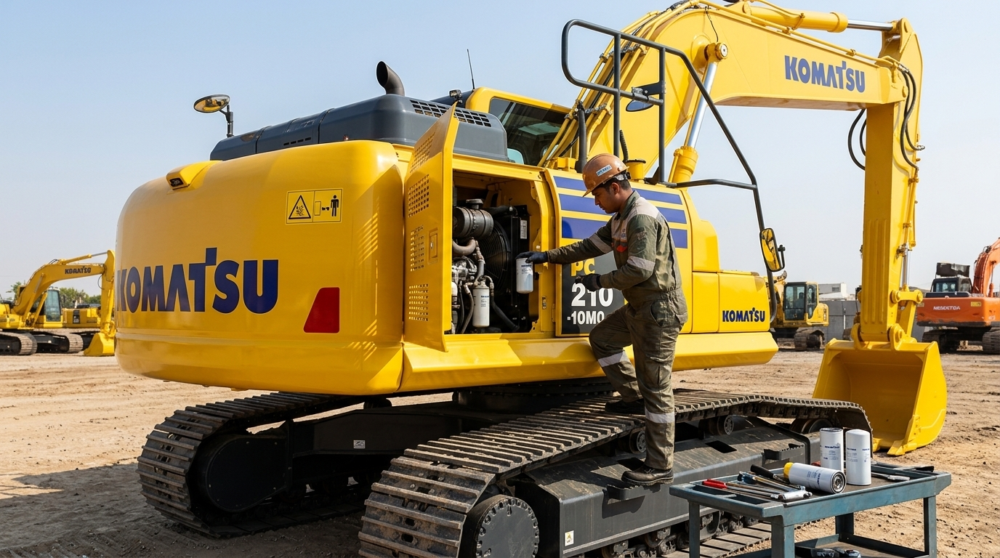
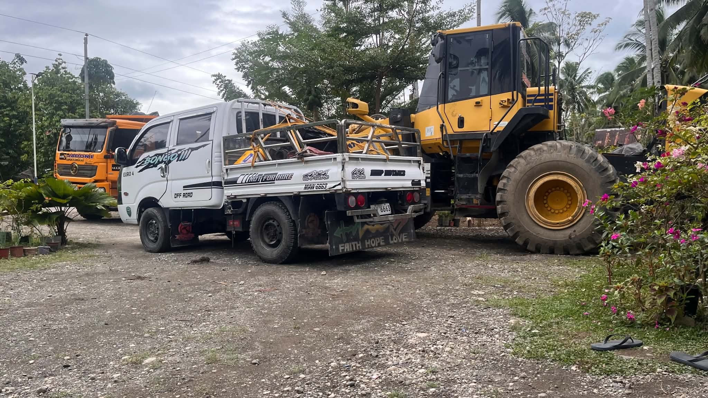
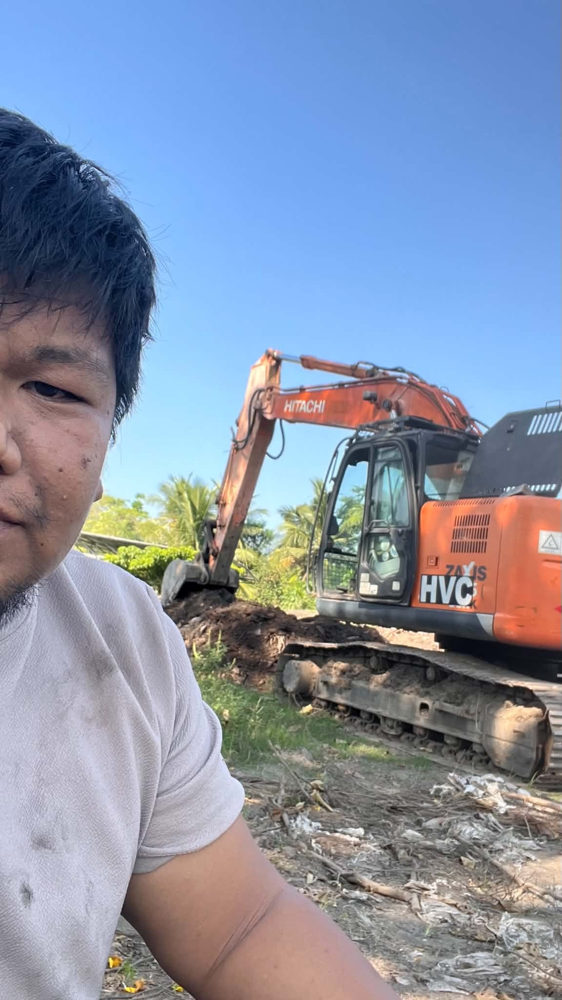
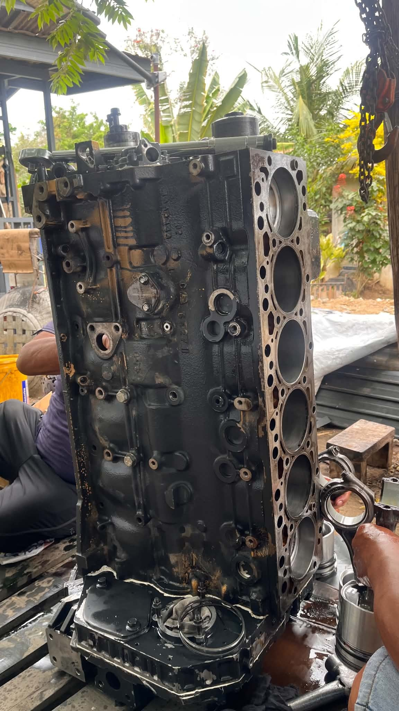

⚙
Preventive Maintenance
Scheduled PMS, inspection, lubrication, filter replacement, adjustments and maintenance reporting based on machine requirements.
HEAVY EQUIPMENT TECHNICAL SERVICE & SUPPORT
TechSpecialist Heavy Equipment Repair Services provides dependable technical support, preventive maintenance, diagnostics and repair solutions for construction and heavy equipment.
COMPANY PROFILE
TechSpecialist Heavy Equipment Repair Services is a technical service provider specializing in the maintenance, troubleshooting, repair and rehabilitation of construction and heavy equipment.
We provide practical and professional field support to equipment owners, contractors and businesses that depend on reliable machinery for their daily operations. Our approach combines systematic inspection, technical diagnostics and proper maintenance practices to identify equipment concerns and recommend appropriate corrective action.
From scheduled preventive maintenance to complex machine troubleshooting, our objective is to help customers maintain equipment performance, reduce avoidable downtime and extend the useful service life of their machines.
OUR MISSION
We aim to become a trusted technical service partner for equipment owners and contractors by providing responsive field support, professional maintenance practices and practical repair solutions.
OUR SERVICES
Our services are designed to support equipment throughout its operating life—from routine maintenance to troubleshooting and major corrective work.
Scheduled PMS, inspection, lubrication, filter replacement, adjustments and maintenance reporting based on machine requirements.
Systematic diagnosis of engine, hydraulic, electrical, electronic and powertrain-related concerns.
Technical repair support for hydraulic systems, engines, attachments, electrical systems and other machine components.
Inspection, assessment and repair planning for machines requiring extensive corrective work or restoration.
Parts identification, sourcing assistance and technical evaluation to support proper repair decisions.
On-site service assistance for contractors, equipment owners and fleet operations throughout our service coverage, supported by three service vehicles equipped for field technical work.
EQUIPMENT & BRANDS
Technical service support for selected construction and heavy equipment brands.
PROJECTS & FIELD SERVICE
A selection of field service, maintenance, diagnostics and repair activities.




REQUEST SERVICE / QUOTATION
Provide the basic details of your machine and concern. Our team can review the information and coordinate the appropriate technical service.
CONTACT TECHSPECIALIST
For preventive maintenance, troubleshooting, repair, rehabilitation and technical service inquiries:
P-1 Cabidianan, Nabunturan, Davao de Oro • Serving Customers Throughout Mindanao